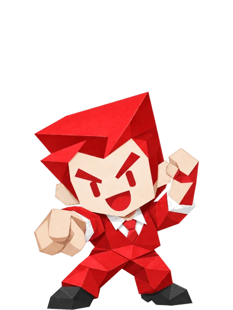

Career
Type
Navigation
🏠
トップ
16 Types
HA系
リーダー
HB系
サポート
DA系
推進
DB系
分析
▶ 診断をはじめる
Site Info
🔒
プライバシーポリシー
🏢
運営者情報

就活キャリア診断
あなたの仕事タイプ、
16Typesから見つける。
20問・約3分でわかるキャリアタイプ診断。
あなたに向いている職種の例と、探し方のヒントまで。
💾
前回の途中から続ける
Q?まで回答済み
→
20問すべてに答える →
最初の5問です。ここで答えた分はそのまま引き継がれます。
ここまで5問。残りは15問、形式はまったく同じです。
20問すべてに答えると
16タイプのうち、あなたに近い1つ
4つの軸それぞれの傾き
向いている職種の例
残り15問 / 約2分
あと5問
残り15問を続ける →
All Types
全16タイプ一覧
あなたはどれ？
診断をはじめる →
1 / 4 ページ（Q1-5）
さあはじめよう！
← 前のページに戻る
あと5問
次へ →
「向いている仕事」に正解はない。
大切なのは、自分の傾向を知ること。
あなたらしい選択を、ここから。